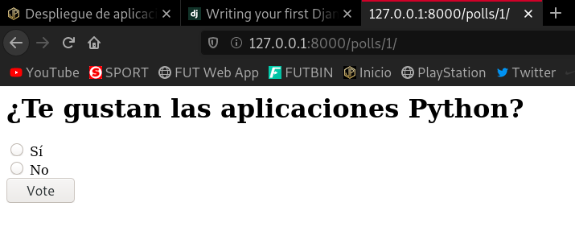
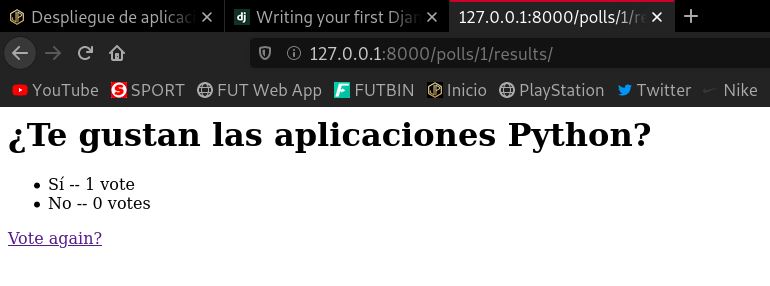

Tarea 1: Entorno de desarrollo
Vamos a desarrollar la aplicación del tutorial de django 3.1. Vamos a configurar tu equipo como entorno de desarrollo para trabajar con la aplicación, para ello:
-
Realiza un fork del repositorio de GitHub:
https://github.com/josedom24/django_tutorial. -
Crea un entorno virtual de python3 e instala las dependencias necesarias para que funcione el proyecto (fichero
requirements.txt).
Tras hacer el fork del repositorio, vamos a clonarlo y a crear dentro de la carpeta que obtendremos, un entorno virtual en el que trabajaremos:
Para crear un entorno virtual necesitamos tener instalado este paquete:
apt install python3-venv -y
Una vez lo tenemos instalado, vamos a clonar el repositorio y a crear el entorno virtual:
javier@debian:~/entornos_virtuales$ git clone git@github.com:javierpzh/django_tutorial.git Clonando en 'django_tutorial'... remote: Enumerating objects: 37, done. remote: Counting objects: 100% (37/37), done. remote: Compressing objects: 100% (32/32), done. remote: Total 129 (delta 4), reused 24 (delta 3), pack-reused 92 Recibiendo objetos: 100% (129/129), 4.25 MiB | 1002.00 KiB/s, listo. Resolviendo deltas: 100% (28/28), listo. javier@debian:~/entornos_virtuales$ cd django_tutorial/ javier@debian:~/entornos_virtuales/django_tutorial$ python3 -m venv django javier@debian:~/entornos_virtuales/django_tutorial$ source django/bin/activate
Ya en el entorno virtual, actualizamos pip e instalamos el fichero requirements.txt que nos instalará de manera automática todos los paquetes que se incluyan en él.
(django) javier@debian:~/entornos_virtuales/django_tutorial$ pip install --upgrade pip (django) javier@debian:~/entornos_virtuales/django_tutorial$ pip install -r requirements.txt
Hecho esto, tenemos nuestro área de trabajo listo.
- Comprueba que vamos a trabajar con una base de datos sqlite (
django_tutorial/settings.py). ¿Cómo se llama la base de datos que vamos a crear?
Para realizar esta comprobación, vamos a inspeccionar las líneas del fichero settings.py.
nano django_tutorial/settings.py
Ahora debemos buscar el siguiente bloque:
DATABASES = {
'default': {
'ENGINE': 'django.db.backends.sqlite3',
'NAME': BASE_DIR / 'db.sqlite3',
}
}
En él podemos ver como efectivamente, trabajaremos con una base de datos sqlite, que recibirá el nombre db.sqlite3.
- Crea la base de datos. A partir del modelo de datos se crean las tablas de la base de datos.
Creamos la base de datos con el siguiente comando:
python3 manage.py migrate
Ya habríamos creado la nueva base de datos.
- Crea un usuario administrador:
Creamos el nuevo usuario administrador con el siguiente comando:
(django) javier@debian:~/entornos_virtuales/django_tutorial$ python3 manage.py createsuperuser Username (leave blank to use 'javier'): javierdjango Email address: javierperezhidalgo01@gmail.com Password: Password (again): Superuser created successfully.
Ya habríamos creado el nuevo administrador.
- Ejecuta el servidor web de desarrollo y entra en la zona de administración (
\admin) para comprobar que los datos se han añadido correctamente.
Es momento de intentar acceder con el usuario administrador creado:
Ejecutamos el servidor web con este comando:
(django) javier@debian:~/entornos_virtuales/django_tutorial$ python manage.py runserver Watching for file changes with StatReloader Performing system checks... System check identified no issues (0 silenced). November 26, 2020 - 12:56:30 Django version 3.1.3, using settings 'django_tutorial.settings' Starting development server at http://127.0.0.1:8000/ Quit the server with CONTROL-C. ...
En el momento que introducimos este comando y dejamos el proceso ejecutándose en la terminal podemos acceder a la página.
Nos dirigimos al navegador e introducimos la dirección de localhost y el puerto 8000 para visualizar esta página, es decir, accedemos a http://127.0.0.1:8000/. Como queremos entrar en la zona de administración, la dirección será http://127.0.0.1:8000/admin.
Nos debe aparecer una interfaz como esta:

Si introducimos las credenciales que hemos especificado a la hora de la creación del usuario administrador, accederemos a esta web:

- Crea dos preguntas, con posibles respuestas.
Para crear una pregunta nueva, debemos dirigirnos a la sección POLLS y en el apartado Questions hacemos click en el botón Add.
Nos aparecerá un menú como este que rellenaremos con los datos que deseemos:

Voy a crear la segunda pregunta:

Y con esto ya habríamos creado las dos preguntas con las respuestas. Aquí lo podemos ver:

- Comprueba en el navegador que la aplicación está funcionando, accede a la url
\polls.
Después de haber generado las dos nuevas preguntas, si nos dirigimos a la dirección http://127.0.0.1:8000/polls, podemos ver que nos aparecen ambas:

Si hacemos click en cualquiera de ellas:

Elegimos una respuesta:

Y podemos observar como nos ha contabilizado el valor de la nueva respuesta.
Tarea 2: Entorno de producción
Vamos a realizar el despliegue de nuestra aplicación en un entorno de producción, para ello vamos a utilizar una instancia del cloud, sigue los siguientes pasos:
- Instala en el servidor los servicios necesarios (Apache2). Instala el módulo de Apache para ejecutar código Python.
apt install apache2 libapache2-mod-wsgi -y
- Clona el repositorio en el DocumentRoot de tu virtualhost.
apt install git
root@aplicacion-python:/srv/www# git clone https://github.com/javierpzh/django_tutorial.git
root@aplicacion-python:/srv/www# ls django_tutorial
root@aplicacion-python:/etc/apache2/sites-available# nano 000-default.conf
DocumentRoot /srv/www/django_tutorial
- Crea un entorno virtual e instala las dependencias de tu aplicación.
root@aplicacion-python:/srv/www/django_tutorial# python3 -m venv django2
root@aplicacion-python:/srv/www/django_tutorial# source django2/bin/activate
(django2) root@aplicacion-python:/srv/www/django_tutorial# pip install --upgrade pip
Collecting pip
Downloading https://files.pythonhosted.org/packages/55/73/bce122d1ed0217b3c1a3439ab16dfa94bbeabd0d31755fcf907493abf39b/pip-20.3-py2.py3-none-any.whl (1.5MB)
100% |████████████████████████████████| 1.5MB 653kB/s
Installing collected packages: pip
Found existing installation: pip 18.1
Uninstalling pip-18.1:
Successfully uninstalled pip-18.1
Successfully installed pip-20.3
(django2) root@aplicacion-python:/srv/www/django_tutorial# pip install -r requirements.txt
...
- Instala el módulo que permite que Python trabaje con MySQL:
apt install python3-mysqldb -y
Y en el entorno virtual:
pip install mysql-connector-python
- Crea una base de datos y un usuario en MySQL.
(django2) root@aplicacion-python:/srv/www/django_tutorial# python3 manage.py migrate ... (django2) root@aplicacion-python:/srv/www/django_tutorial# python3 manage.py createsuperuser Username (leave blank to use 'root'): javierdjango Email address: javierperezhidalgo01@gmail.com Password: Password (again): Superuser created successfully.
- Configura la aplicación para trabajar con MySQL, para ello modifica la configuración de la base de datos en el archivo
settings.py:
DATABASES = {
'default': {
'ENGINE': 'mysql.connector.django',
'NAME': 'myproject',
'USER': 'myprojectuser',
'PASSWORD': 'password',
'HOST': 'localhost',
'PORT': '',
}
}
-
Como en la tarea 1, realiza la migración de la base de datos que creará la estructura de datos necesarias. comprueba en MariaDB que la base de datos y las tablas se han creado.
-
Crea un usuario administrador:
python3 manage.py createsuperuser. -
Configura un virtualhost en Apache con la configuración adecuada para que funcione la aplicación. El punto de entrada de nuestro servidor será
django_tutorial/django_tutorial/wsgi.py. Puedes guiarte por el Ejercicio: Desplegando aplicaciones flask, por la documentación de Django: How to use Django with Apache and mod_wsgi,… -
Debes asegurarte que el contenido estático se está sirviendo: ¿Se muestra la imagen de fondo de la aplicación? ¿Se ve de forma adecuada la hoja de estilo de la zona de administración? Para arreglarlo puedes encontrar documentación en How to use Django with Apache and mod_wsgi.
-
Desactiva en la configuración (fichero
settings.py) el modo debug a False. Para que los errores de ejecución no den información sensible de la aplicación. -
Muestra la página funcionando. En la zona de administración se debe ver de forma adecuada la hoja de estilo.
En este momento, muestra al profesor la aplicación funcionando. Entrega una documentación resumida donde expliques los pasos fundamentales para realizar esta tarea.
Tarea 3: Modificación de nuestra aplicación
Vamos a realizar cambios en el entorno de desarrollo y posteriormente vamos a subirlas a producción. Vamos a realizar tres modificaciones (entrega una captura de pantalla donde se ven cada una de ellas). Recuerda que primero lo haces en el entrono de desarrollo, y luego tendrás que llevar los cambios a producción:
1. Modifica la página inicial donde se ven las encuestas para que aparezca tu nombre: Para ello modifica el archivo django_tutorial/polls/templates/polls/index.html.
2. Modifica la imagen de fondo que se ve la aplicación.
3. Vamos a crear una nueva tabla en la base de datos, para ello sigue los siguientes pasos:
- Añade un nuevo modelo al fichero
polls/models.py:
class Categoria(models.Model):
Abr = models.CharField(max_length=4)
Nombre = models.CharField(max_length=50)
def __str__(self):
return self.Abr+" - "+self.Nombre
-
Crea una nueva migración:
python3 manage.py makemigrations. -
Y realiza la migración:
python3 manage.py migrate -
Añade el nuevo modelo al sitio de administración de django:
Para ello cambia la siguiente línea en el fichero polls/admin.py:
from .models import Choice, Question
Por esta otra:
from .models import Choice, Question, Categoria
Y añade al final la siguiente línea:
admin.site.register(Categoria)
- Despliega el cambio producido al crear la nueva tabla en el entorno de producción.
Explica los cambios que has realizado en el entorno de desarrollo y cómo lo has desplegado en producción para cada una de las modificaciones.